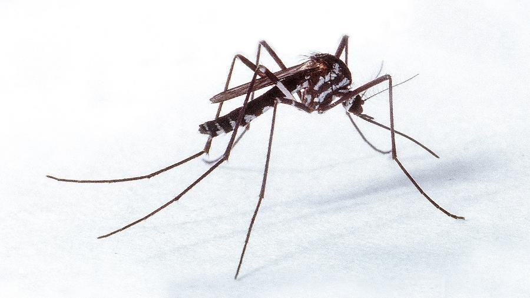

 El género Haemagogus está conformado por un grupo de mosquitos de hábitos principalmente selváticos, nativos de regiones tropicales de América Central y América del Sur. Estos insectos han evolucionado en estrecha relación con ecosistemas forestales, desarrollando estrategias especializadas para sobrevivir en hábitats arbóreos. Se consideran importantes vectores de enfermedades zoonóticas debido a su interacción con monos y, eventualmente, con humanos.
Su evolución se ha caracterizado por una adaptación al nicho ecológico del dosel forestal, donde depositan sus huevos en cavidades de árboles llenas de agua (fitotelmata). Estas condiciones les permitieron diversificarse en varias especies, muchas de las cuales son de importancia médica. El contacto entre los humanos y estos mosquitos aumentó con la deforestación, lo que facilitó la transmisión de enfermedades que anteriormente eran exclusivas de animales silvestres.
Haemagogus se caracteriza por su comportamiento diurno, su capacidad de vuelo fuerte y su habilidad para recorrer largas distancias, lo que los convierte en importantes vectores en zonas rurales y periurbanas. Este género incluye especies como *Haemagogus janthinomys*, uno de los principales vectores del virus de la fiebre amarilla selvática.
El ciclo de vida del mosquito Haemagogus sigue las mismas etapas básicas que otros mosquitos: huevo, larva, pupa y adulto. Sin embargo, presenta particularidades adaptadas a su ambiente selvático. Los huevos son depositados en huecos de árboles o bambúes, donde se acumula agua de lluvia. Este ambiente natural protege las fases inmaduras de los depredadores comunes y les proporciona un microhábitat estable.
Los huevos de Haemagogus también tienen la capacidad de resistir la desecación y permanecer viables durante meses. Una vez que las lluvias reactivan estos criaderos, los huevos eclosionan y liberan larvas que se alimentan de materia orgánica en descomposición presente en el agua acumulada.
Tras completar su desarrollo larval y la fase de pupa, emergen los adultos. Las hembras se alimentan de sangre para producir huevos, mientras que los machos consumen néctar. El ciclo completo puede durar entre 10 y 14 días, dependiendo de las condiciones ambientales. Debido a su hábitat natural, su control es más difícil en comparación con mosquitos urbanos como Aedes.
Haemagogus es uno de los principales vectores del virus de la fiebre amarilla en su ciclo selvático. Transmite el virus entre monos y, ocasionalmente, a humanos que ingresan a zonas boscosas sin vacunación previa. Esta enfermedad puede provocar síntomas graves como fiebre, vómitos, ictericia e insuficiencia hepática.
Algunas especies del género Haemagogus también han sido implicadas en la transmisión del virus Mayaro, una enfermedad viral emergente que causa fiebre, dolor de cabeza, erupción cutánea y artralgias persistentes similares al chikungunya.
El mosquito Haemagogus deja picaduras con inflamación notable y fuerte picazón. Es un vector importante de la fiebre amarilla en zonas selváticas.